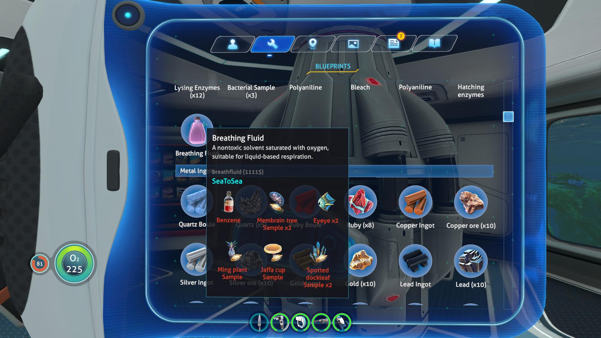

Using Mechanics
In addition to making use of much more of the map than is normally required, Sea to Sea makes the player utilize several game mechanics that are semi-frequently ignored.
One of the most significant of these is the Seabase building mechanic; while this can be completely skipped for a vanilla playthrough, C2C requires seabases for several reasons, including to house and operate a recharging system for the liquid breathing apparatus - without which deep exploration is nearly impossible - and a new "Bioprocessor" crafting machine which has inherited most of the "plant to resource" type recipes.
Closely related to this is the agricultural mechanic, something encouraged by the vanilla game yet never required. With this mod, that encouragement is much much stronger.
 Or does scavenging this from the wild by hand every time sound fun to you?
Note that to encourage multiple bases across the map, the harvest yield of farmed flora in their native biomes has been doubled for all knife-type harvest plants and increased by 50% for "collectible fruit" plants.
Other examples of emphasizing game mechanics include extending the amount of time the player will spend with each "tier" of vehicle (including "no vehicle"), and increasing the need to interact with Sea Treaders for their...resource yields.
Bioprocessor
The bioprocessor is a processing (ie crafting, but automatic and over time) machine which is now the primary way you produce most plant- and animal-derived crafting products, such as benzene and hydrochloric acid, as well as several new ones including luminol and sealant. All of these work in the same general manner, taking some number of the raw input ingredient and some processing enzymes, and gradually consuming these enzymes until the final product is created.
Some of the recipes are not replacements for the original recipes, but simply efficiency improvements. That is, for early-game items like lubricant, the original recipe continues to exist in a less efficient form, with the bioprocessor alternative being far more convenient once available.
The bioprocessor is quite power-hungry, necessitating substantiative power generation infrastructure, and as such is best placed in a base that is more than a simple minimalist outpost.
Environmental Hazards
Many of such "initially inaccessible/unsurvivable locations" are that way because of new dangers added to the oceans of 4546B, specifically to the environment in certain regions. Surmounting these will necessitate gaining specific equipment, tactics, knowledge, or all of the above, until which point the areas are - generally lethally - unable to be explored and exploited.
These new hazards include but are very much not limited to:
- The effects of the toxic, hypersaline brine of the lost river is no longer solely confined to a narrow basin in the floor; though the effect remains by far the most pronounced under that surface, chemical diffusion has rendered all the water in the tunnels both aggressively toxic and extremely electrically conductive
- Water pressures at extreme depths now act upon a free-swimming player, resulting in severely shortened survival times unless mitigation efforts are employed
- Lava zone temperatures have been drastically increased, to the point where unprotected swimming is rapidly fatal, some regions are unsafe when outside of a vehicle regardless of equipment, and vehicles, if not retrofitted, will disastrously overheat
Hard Mode
One of the config options for C2C is "Hard Mode". This does not resemble hardcore mode, nor does it make the game harder in the traditional sense (for example it does not appreciably make survival any more difficult). "Hard mode" instead is perhaps more accurately termed "More aggressive progression enforcement, more mechanics to adapt to, and more strongly encourage the intended diversification in gameplay". That is, this option controls the intensity of some existing mechanics and the presence of the more punishing/controversial ones.
The following are among the changes when enabling hard mode:
- Bioprocessor power cost increased 2.5x, to require more robust power infrastructure
- Oxygen consumption at extreme depths rises more dramatically
- More fragments are required for many core technologies
- Vehicles now take increased crush damage the farther below the depth limit they go
- Solar power falls off faster with depth, encouraging other power sources
- Reduced hand-collectible mercury spawn rate, making prawn use more necessary
- Liquid breathing lasts only 2/3 as long per full recharge (main base-refilled tank, not supply tank)
- Abyssal stalker avarice increased
- Power cell charger uses 50% more power
- Increased overheating rate for vehicles in appropriate environments
- Sonar "noise" significantly increased
- Seamoth electrical defense is now only unlocked after an incident where it would have been useful
- Reduced spawn rate of some rare renewable resources
- Increased cost of some recipes
- Reduced base hull integrity boost from some modules
- Lantern tree growth rate reduced
- ACU waste generation rate reduced
- Stalker teeth require being found naturally before being detectable via the scanner room
- Reduced lumen oil spawn rate and lifespan, and increased its use in recipes
- Magnetic anomalies increased in intensity and frequency
Configuration Settings
This mod contains several config options to modify values and behaviors - such as for balance or server safety concerns, or simply personal taste - to your preferences. Note that several settings may have bounds imposed on their values, either logically or explicitly; these can usually be seen in the actual settings files or ingame. These are listed in order found in the source code, which is generally the order in which they were added; They may be present in a different order ingame or in the configuration files.
The settings for the mod, when installed, can be found in the mod's install folder.
Additional Exploration Prompts
Type: boolean
Current Default Value:
true
Vanilla Value
Value:
false
Whether to make progression a bit more straightforward by enabling additional prompts from your PDA.
Platinum Theft Chance
Type: float
Current Default Value:
0.5F
Minimum Value
Value:
0.25F
How likely platinum is to be stolen from your inventory by [redacted].
Hard Mode
Type: boolean
Current Default Value:
false
Vanilla Value
Value:
false
Whether to enable hard mode and all of its effects.
Enable Lifepod Drift
Type: boolean
Current Default Value:
false
Vanilla Value
Value:
false
Whether pod 5 should after a short time begin drifting and then sinking, before being carried out of the map entirely.
Source Code
The source code for Sea To Sea can be found here:
GitHub